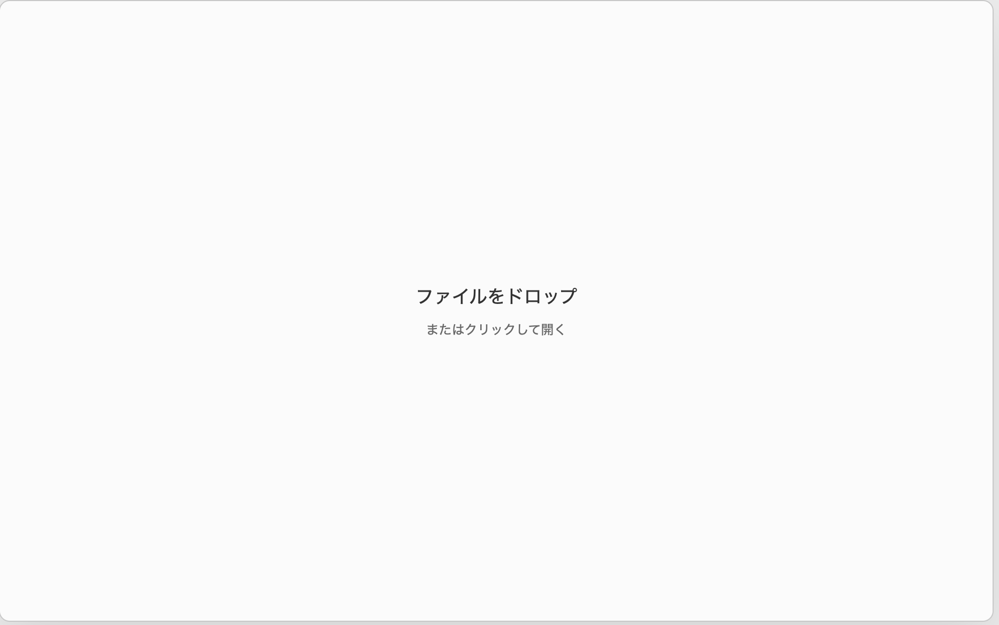
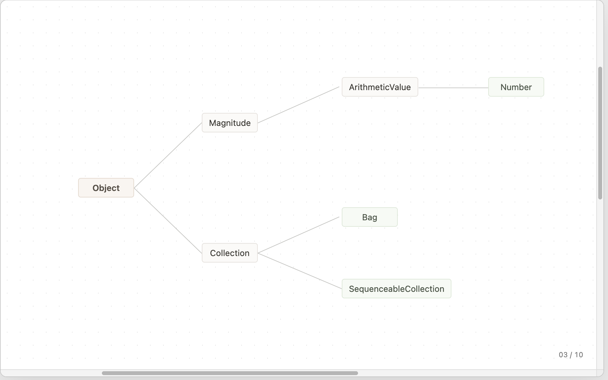
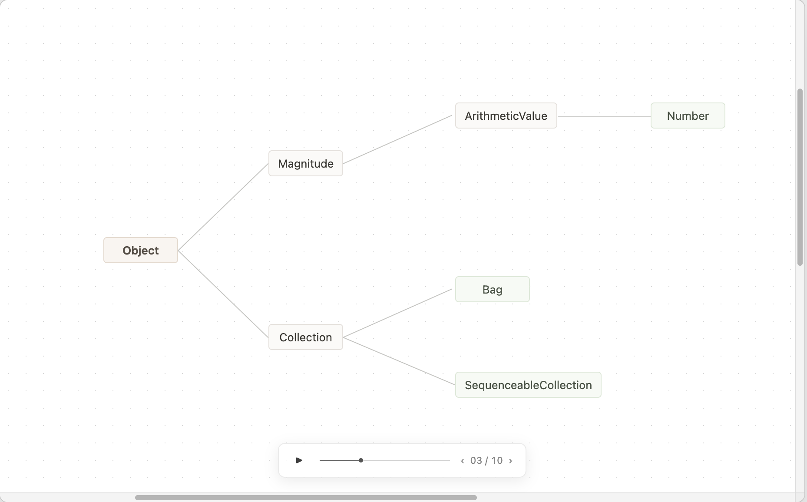
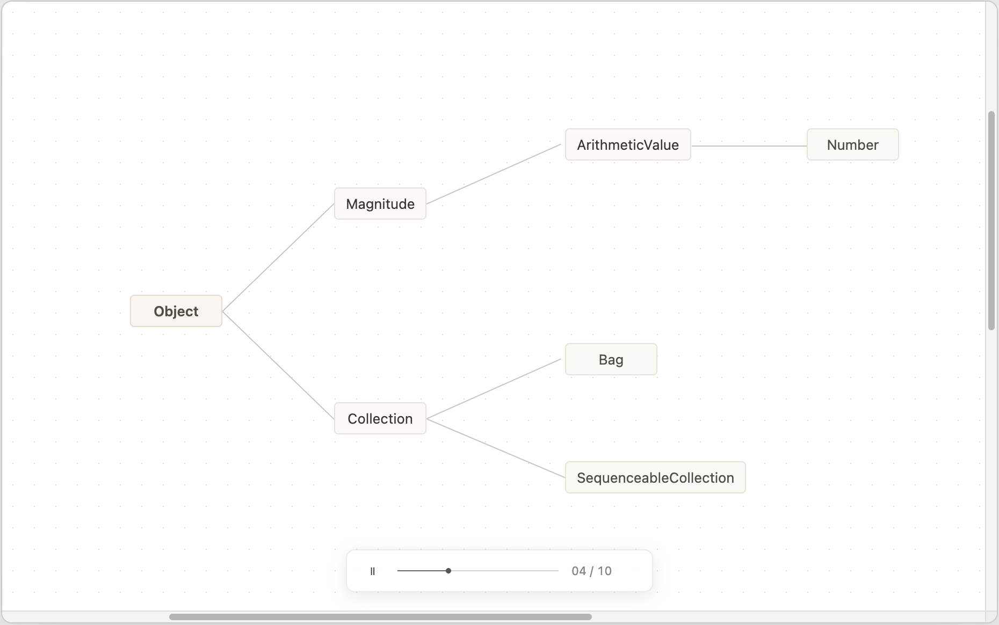
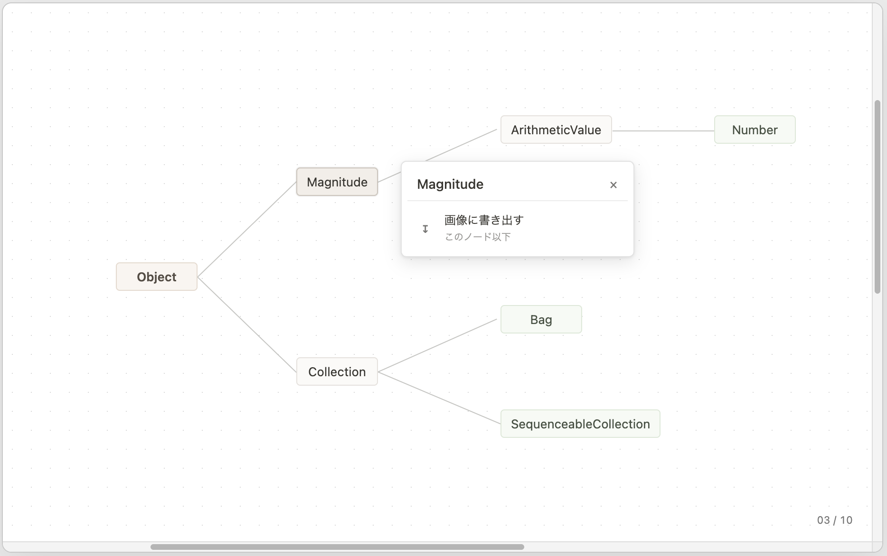
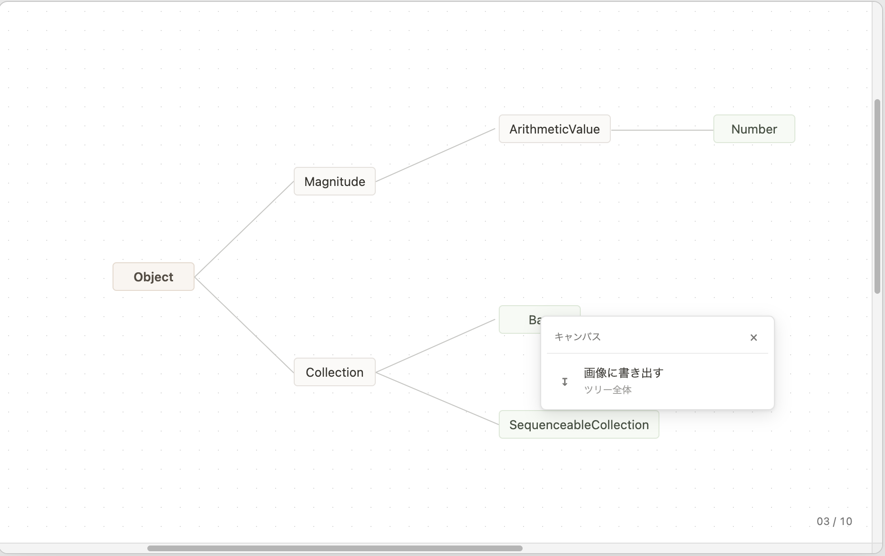

本設計は、テキストから生成したノード群を樹状に整列し、ウィンドウへの表示、 ノード名の編集、および選択したノード以下の画像出力を行うための基本構成を示す。
図のMermaidソースは
basic-design-2026-07-18.mmdから読み込む。
クラスはMVC関係を淡い青、それ以外を淡い黄で示す。関係線と説明ラベルは、 虹の順序を参考に、継承を赤、コンポジションを橙、集約を緑、関連を青、 実現を藍、依存を紫で示す。
基本設計では構造上の保持関係とMVC・Observerの関係を示し、 Modelから各処理を呼び出す実装上の依存関係は省略する。
基本設計図を読み込んでいます。
画面は樹状整列のCanvasを中心とし、常設する操作要素を最小限にする。 ルートは薄い茶色、中間ノードは薄いベージュ、リーフは薄い緑で表示する。 Canvasが表示領域より大きい場合は、右端と下端にスクロールバーを表示する。






| 状態・操作対象 | 操作 | 結果 |
|---|---|---|
| ファイルを開く前 | テキストファイルを画面へドロップする | ファイルを読み込み、ウィンドウのCanvas表示範囲を基準にノードを初期配置する。 |
| ファイルを開く前 | 画面中央を左クリックする | ファイル選択画面を開く。ファイルを選択すると読み込みと初期配置を行う。 |
| Canvas | ドラッグする | ドラッグ量に応じてCanvasをスクロールする。クリックとは、押下位置から一定量以上移動したかで区別する。 |
| Canvas | ホイールまたはトラックパッドを操作する | Canvasを上下左右にスクロールする。スクロール位置は画面右端と下端のバーへ反映する。 |
| Canvas | ピンチ操作、または修飾キーを押しながらホイールを操作する | 操作位置を基準として樹形図を拡大または縮小する。 |
| 画面下部 | ポインターを近づける | 再生操作を表示する。ポインターが離れ、操作していない場合は再生操作を隠す。 |
| 停止中 | 再生を左クリックする、またはSpaceキーを押す | 整列工程の再生を開始する。前後工程の操作を隠し、一時停止操作を表示する。 |
| 停止中 | 工程番号の左右を左クリックする、または左右キーを押す | 一つ前または一つ後の整列工程を表示する。 |
| 停止中 | タイムラインを左クリックまたはドラッグする | 指定した位置に対応する整列工程を表示する。 |
| 再生中 | 一時停止を左クリックする、またはSpaceキーを押す | 現在の工程で再生を停止し、前後工程の操作を表示する。 |
| ノードまたはリーフ | 左クリックする | 対象の名前を標準出力へ書き出し、対象を選択して小窓を表示する。 |
| ノードの小窓 | 名前を編集してEnterキーを押す | 名前を対象へ反映し、表示サイズの変化に応じて整列とCanvas領域を再計算する。 |
| ノードの小窓 | 「画像に書き出す」を左クリックする | 選択したノードから到達可能なノードと枝の範囲を画像として保存する。 |
| ノードのない場所 | 左クリックする | ノードの選択を解除し、表示中の小窓を閉じる。 |
| ノードのない場所 | 右クリック、トラックパッドの2本指クリック、またはControl＋クリックを行う | 通常のコンテキストメニューに代えてCanvas用の小窓を表示する。 |
| Canvasの小窓 | 「画像に書き出す」を左クリックする | ツリー全体を含むCanvas領域を画像として保存する。 |
| 小窓 | 閉じる操作を左クリックする、またはEscapeキーを押す | 編集内容を確定せずに小窓を閉じる。 |